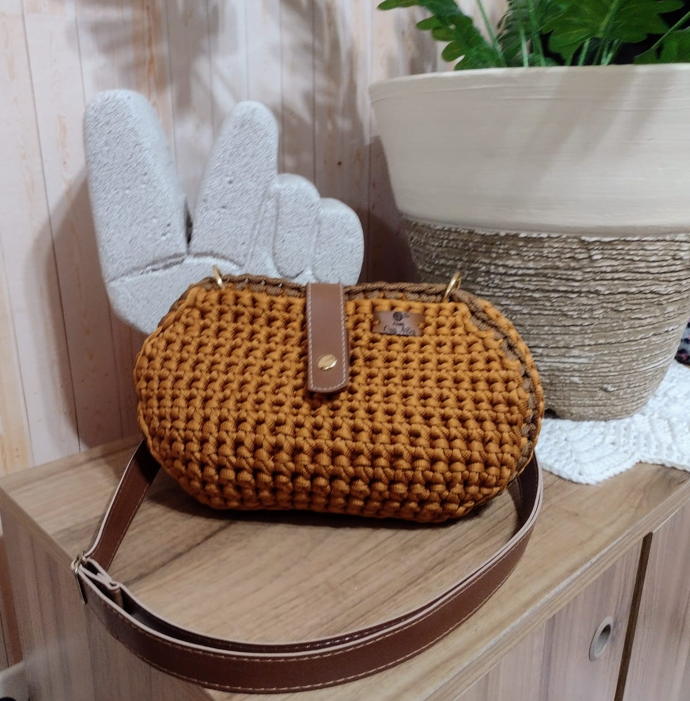

O fio de Malha Premium possui leveza, maciez e qualidade , a união perfeita entre conforto, resistência e durabilidade.
Outra vantagem do fio de malha é a variedade de cores e estampas disponíveis. Como ele é feito a partir de tecidos já existentes, é possível encontrar uma ampla gama de opções de cores e estampas diferentes, o que permite que a bolsa seja personalizada de acordo com o gosto e estilo de quem está fazendo o crochê.
Além disso, o fio de malha é uma opção mais sustentável do que outros tipos de fios para crochê, já que ele utiliza materiais que seriam descartados ou jogados fora. Ao escolher o fio de malha para criar uma bolsa de crochê, é possível contribuir para a redução do impacto ambiental e do desperdício de recursos.
Bolsas com fio de Malha:
